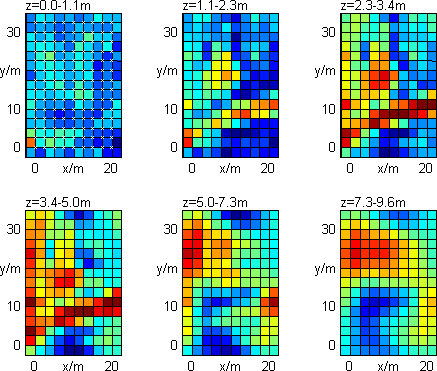
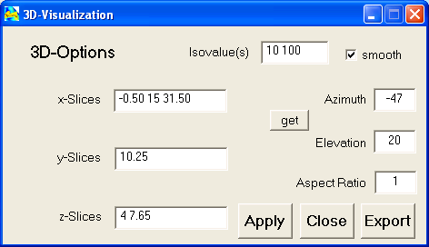
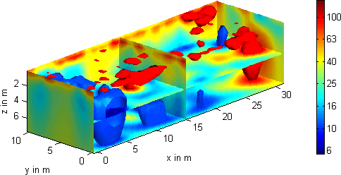
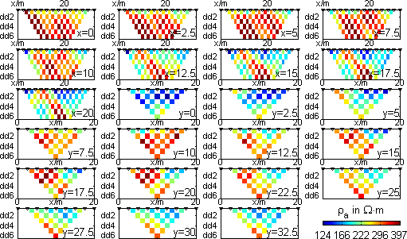

| Start Page | Menu Items | Interactive Features | Hotkeys | Tutorial |

Hotkey for Model Display: Shift + M
With this GUI the Model can be visualized three-dimensionally.
|  |  |
Isovalue: One ore more resistivity values can be used to draw iso-bodies
of constant resistivity.
Smooth: The smooth option can be used if small-spaced oscillations are
to be hidden.
x/y/z-Slices: An arbitrary number of values for x,y and z can be used
to define the slices in the individual directions.
Azimuth/Elevation: define the direction of the users view point.
Get: Azimuth and Elevation can be changed in the figure window. Get reads
the values into the GUI.
Aspect Ratio: The Aspect ratio can be used to increase the scale for
the z-direction.
Hotkey for 3D Model visualization: 3
Furthermore, it is possible to display the sensitivity for every single datum
point. A positive sensitivity(red) leads to an increased apparent resistivity
when the cell resistivity is rised, negative sensitivity(blue) lower the apparent
resistivity. The measurement is insensible to regions of zero sensitivity(white).
Regarding this we have a first concept of detectability and resolveability of
underground structures.
By moving the slider (or typing datum number) we can switching to all data points.

Hotkey for data display: Shift + D
The forward response of the current model ist diplayed in the same way like the data.
Hotkey for data display: Shift + R
In the same manner as for plotting the data one can display the (measured or estimated) standard deviations of each datum point.